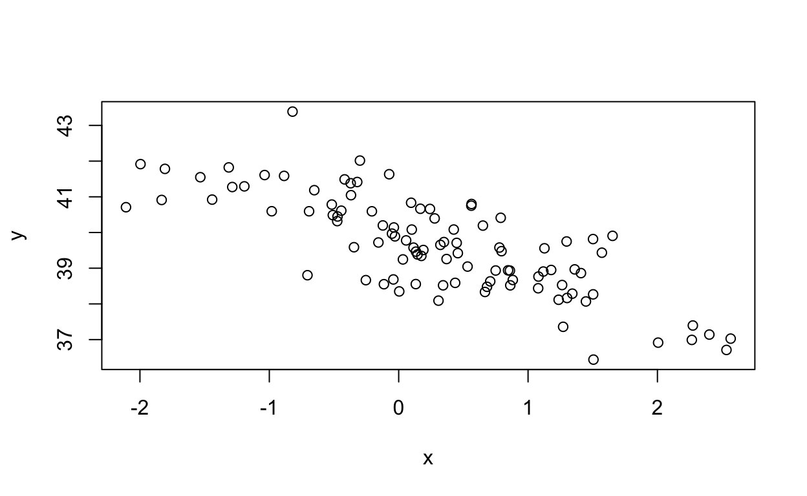
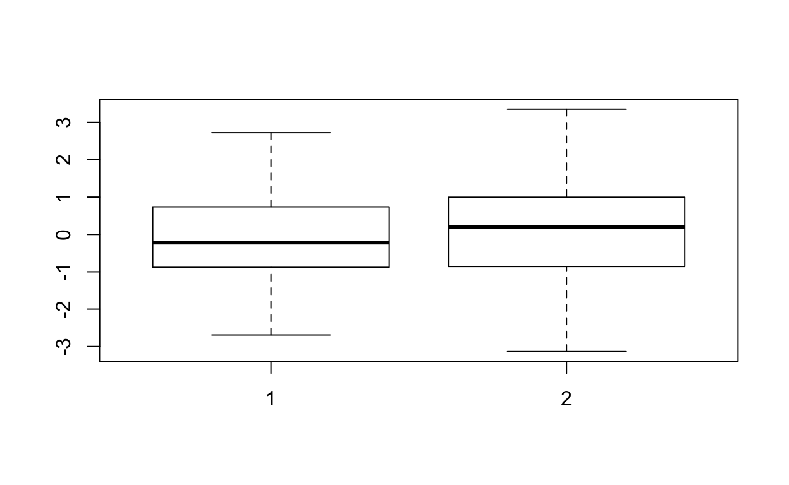
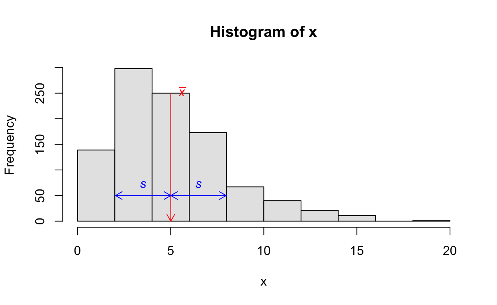

奥村 (2016) §2.1 を参考にしています。
データには次の分類があります。
次の図を見て問題に答えなさい。


\(n\)個の数値が与えられていて，\(i=1,\dots,n\) のラベルが付されている。
\[ x = \{ x_1, x_2, \dots, x_n\} \]
平均値 \(\bar{x}\) は次の式で定義される数値である。
\[ \bar{x} = \frac{1}{n}\sum_{i=1}^n x_i \]
データの順序を小さい順に並び替えたものを
\[ x_{[1]}, x_{[2]}, \dots, x_{[n]} \] とする。ラベルにカッコを付けて \([i]\) となっていることに注意。\(x_{[i]}\) は データのうち \(i\)番目に小さい数である。
中央値 \(\mathrm{Median}(x)\) を次のように定義する。
\[ \mathrm{Median}(x) = \begin{cases} x_{[(n+1) / 2]} &\quad \text{if } n \text{ が奇数} \\ \frac{1}{2}\left(x_{[n/2]} + x_{[n/2 + 1]}\right) &\quad \text{if } n \text{ が偶数} \end{cases} \]
例えば \(n=11\) のときは，\(\mathrm{Median}(x) = x_{[6]}\), \(n=10\) のときは \(\mathrm{Median}(x) = (x_{[5]} + x_{[6]}) / 2\) である。 小さい順に並べてちょうど真ん中にある数字である。
平均値や中央値など，データの典型的な値を表現するための統計量を中心傾向とか代表値という。
次のデータ x の平均値と中央値を求めなさい。
x <- c(3, 10, 3, 3, 10, 4, 2, 6, 7, 1, 2, 5, 4, 9, 3)何らかの理由でデータの計測ができないということが起こると，「欠測値」（missing data) が生じる。R では欠測値を NA で表現する。
さきほどのデータで最後の数字を NA に置き換えたものである。残念ながら単純に mean() 使っては平均値を計算することはできない。
x <- c(3, 10, 3, 3, 10, 4, 2, 6, 7, 1, 2, 5, 4, 9, NA)
mean(x)[1] NA欠測値がランダムに起こっているのであれば，単純に取り除いてもよいかもしれない。しかし，「預金残高が高い人が預金残高をレポートしない」（例えば犯罪被害にあうことを嫌って）などの明確な傾向があるなら，単純に欠測値を取り除くとバイアスが生じる。取り除くにしても意識的に行うべきだろう。
mean, median にパラメータを1つ追加（変更）して，欠測値をすべて取り除いたデータの平均値と中央値を計算してください。（注意：データを改変する必要はありません）
x <- c(1, 1, NA, 8, 2, 7, 9, NA, 1, NA, 3, 3, 10, 9, 1)
mean(x)
median(x)na.rm = TRUEデータの中心（central tendency）を表す指標として，平均と中央値について学んだ。平均はもっとも標準的な指標だが，外れ値が多い場合にはデータのメイン部分の特徴を正確に捉えられないケースがある。
次の例を見てみよう。数字は『p値とは何か』（ヴィッカーズ著，竹内監訳）から取っている。舞台はマイクロソフト社の従業員が出入りする食堂である。食堂経営者は客層の所得を把握して，ランチセットの価格帯を決めたいと考えている。調査のために「ランダム」に8人の所得データを取得した。7人の（仮想的な）従業員の年収（単位は万円）と，最高額のデータはもちろんビル・ゲイツの年収である。
income <- c(300, 300, 350, 400, 450, 500, 850, 100000)
mean(income)## [1] 12893.75平均所得が1億円を超えているからランチのコースを 5000円に設定してもよいだろうか？
もちろんそんなはずはない。サンプルの大部分は1000万円未満なのに，平均値はビル・ゲイツの年収に引き上げられてしまった。平均値は外れ値に弱いのだ。「外れ値の影響を受けにくい」という性質を「ロバスト」ということがある。中央値は代表的なロバスト統計量である。
他にも刈り込み平均，ウィンザライズド平均，加重平均などがある。
mean(x, trim = p) で，両端を p% ずつ落とした平均を計算できる。income <- c(300, 300, 350, 400, 450, 500, 850, 100000)
mean(income, trim = 0.1)
library(psych)
winsor.mean(x, trim = 0.1)\(n\)個の数値データ
\[x = \{ x_1, x_2, \dots, x_n \}\]
が手元にある。代表的な中心傾向を表す指標はデータの平均 (mean) であり，次の式で計算した。
\[ \bar x = \frac{1}{n} \sum_{i=1}^n x_i \]
R では mean() を使う。
大きい数字 \(a\) と小さい数字 \(b\) があったら，足して2で割って真ん中 \((a + b) /2\) を求めるのと同じである。\(\{900, 1100\}\) の平均も \(\{ 0, 2000 \}\) の平均も1000である。この2つのデータが「夫婦の年収だ」と言われたとき，2つの夫婦が「まったく同じ暮らし向きだ」と思う人はないだろう。
データは中心の周りに沢山集まっている場合もあれば，中心から離れたところにたくさん散らばっている場合もある。平均に限らず，「各数値が中心傾向からどれだけ離れているか？」を散らばりとかスケール（尺度）という。
中心傾向として平均を使った場合のスケール指標は分散 \(s^2\) （標本分散，不偏分散），または標準偏差 \(s\) （標本標準偏差）である。次の式で計算する。
\[ s^2 = \frac{1}{n-1} \sum_{i=1}^n (x_i - \bar x)^2, \quad s = \sqrt{s^2} \]
平均からの距離の2乗 \((x_i - \bar x)^2\) を「平均」したものが標本分散である。ただし，\(n\) で割るよりも \(n-1\) で割るほうが都合が良いことが多いので，\(n-1\) で割っている。R では \(s^2\) は var()，\(s\) は sd() で計算できる。
下図は平均と標準偏差のイメージである。平均±標準偏差の周りに多くのデータが集中している。

正規分布に従う乱数を生成して，平均と分散，標準偏差を求めてみよう。「Run Code」のたびに違う数値が現れることに注意しよう。標本平均や標本分散がいつも似たような数字を出力するのはなぜか？
x <- rnorm(1000, mean = 10, sd = 3)
mean(x)
var(x)
sd(x)期待値 \(\mu\), 分散 \(\sigma^2\) の同一分布に従う独立な確率変数 \(X_1, \dots, X_n\) がある（データ \(x\) の背後にある確率変数）。確率変数 \(X\) について，期待値 \(\mathbb{E}[X]\), 分散 \(\mathrm{Var}(X) = \mathbb{E}[(X - \mathbb{E}[X])^2]\) という記号を使う。
次のコードを読んで結果を解釈してくだささい。
n = 1000
mu = 10
sigma = 3
xbar <- replicate(100, mean(rnorm(n, mean = mu, sd = sigma)))
var(xbar)データを小さい順に並べたときに得られる値について，次の3つは説明は不要だろう。
min(x)median(x)max(x)x の定義を変えていろいろ試してみよう。
x <- 1:100
min(x)
median(x)
max(x)最大値と最小値の差を「範囲」「レンジ」という。
x <- 1:100
range(x)
max(x) - min(x)分位点
下位（あるいは上位）から順番に数えていって，ある数字がデータ全体の何%の位置にあるかに関心があることがある。逆に下からA% の位置にあるデータがわかれば，それ以下の値を取るデータが全体のA% であることがわかる。
例えば，中央値というのはちょうど 50% の位置にあるデータのことである。所得上位1%以上の人 が経済の総所得のどれほどを獲得しているかは，マクロ経済の関心事である。
\(100\alpha\)% 点 を\(q_\alpha\) と書く。\(x_i \le q_\alpha\) となる \(x_i\) の数は全体のおよそ \(\alpha\times100\)% である。R では quantile() によって計算できる。
x <- 1:100
quantile(x, c(0.1, 0.9))75%点と25%点の差を 四分位範囲 という。R では IQR(x) で計算できる。
x <- 1:100
quantile(x, 0.75) - quantile(x, 0.25)
IQR(x)標準正規分布の場合は IQR(x) / 1.349 を使うと，標準偏差のよい推定量となる。
x <- rnorm(1000)
IQR(x) / 1.349x <- rt(100, df = 3)
head(x)
tail(x)fivenum(x) で一覧できる五数要約（min, 25%点, 中央値, 75%点, max）と箱ひげ図を見比べて，箱ひげ図の作り方について検討しなさい。
fivenum(x)
boxplot(x)